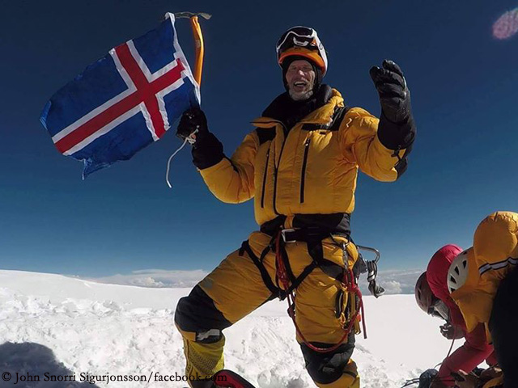

John Snorri
Snorri Sigurjónsson (born 20 June 1973 – disappeared 5 February 2021) is an Icelandic mountain climber. In May 2017, he became the first Icelander to summit Lhotse in the Himalayas, which is 8,516 meters high and the fourth highest mountain in the world. On July 28 of the same year, he became the first Icelander to summit K2. On 4 August 2017, he climbed the summit of Broad Peak (8051 m).
On 5 February 2021, John Snorri along with Ali Sadpara and Juan Pablo Mohr went missing while attempting to ascend K2. On 18 February, Pakistan authorities announced that the three men where presumed dead but the search for their remains would continue
Early life
Born in the countryside of Ölfus, Iceland, he excelled at sports at an early age, and later found his physical and mental passion in mountain climbing.
Personal life
John Snorri is married to Lína Móey Bjarnadóttir and the father of six children
Mountaineering experience
His first notable success was Mont Blanc (4,808 meters) in 2011, the highest mountain in the Alps. In the following years he conquered some of the world’s most challenging summits.
The following summation done by John snorri.
| Mountain Name | Height | Year |
|---|---|---|
| Ama Dablam | 6,812 meters | 2015 |
| Mount Elbrus | 5,642 meters | 2016 |
| Lhotse | 8,516 meters | 2017 |
| K2 | 8,611 meters | 2017 |
| Broad Peak | 8,047 meters | 2017 |
| Matterhorn | 4,478 meters | 2018 |
| Breithorn | 4,164 meters | 2018 |
| Pollux | 4,092 meters | 2018 |
| Manaslu | 8,156 meters | 2019 |
For further information Click Here